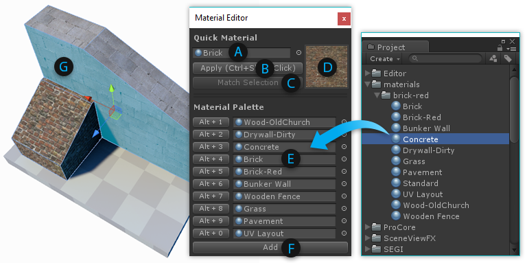

These Tool Panels contain important tools for Shape Creation, Materials, Texturing and UVs, Vertex Coloring, and Smoothing Groups.
Note: Each panel can be docked, kept floating, or simply closed immediately after use.

 Shape Tool
Shape Tool
Keyboard Shortcut : CTRL SHIFT K
Purpose : Create new editable shapes such as Cylinder, Arch, and Stairs.
Each shape has specific properties which can be customized before creation- for example, the Stairs shape lets you choose items like Step Height, Arc, and which parts of the Stairway to build.

Usage : To create a new shape, do the following:
- Open the New Shape Tool
- If "Shape Preview" is enabled, you will see a blue Preview Object in the scene
- Choose the Shape you'd like to create (ex, Cube, Cylinder, Torus, etc)
- Set the options (ex, width, height, radius, number of stairs, etc)
- You may Move or Rotate the Preview Object within your scene
- Once ready, click "Build Shape" to create your final Shape
 Material Tools
Material Tools
Purpose : Save and apply your most frequently used materials, using Quick Material one-click or Material Palette keyboard shortcuts.

Quick Material Usage:
- (A) The current "Quick Material"
- (B) Apply the Quick Material to the selected faces
- (C) Pick your Quick Material from the selected face
- (D) Preview of the current Quick Material
Hold CTRL SHIFT while clicking on a face to apply the Quick Material.
Material Palette Usage :
- (E) Drag-and-drop your often-used materials to these slots
- (F) Create additional Material Palette slots
You can also press ALT (number key) to apply materials from the Palette.
 Texturing and UVs
Texturing and UVs
Purpose : Opens the UV Editor Panel, for controlling how materials are displayed on your mesh (tiling, offset, unwrapping, etc).

The UV Editor Panel includes both Auto UV tools, and a complete Manual UV Editing and Unwrapping system.
More Info: Texturing and UVs
 Vertex Color Tools
Vertex Color Tools
Purpose : Opens the Vertex Coloring controls, for applying or painting vertex colors onto meshes.

Applying Vertex Colors is a great way to colorize levels for prototyping, team layout, zones, etc.
 Smoothing Groups
Smoothing Groups
Purpose: Create a smooth and rounded look, or sharp-edged and faceted.
Usage:

- Choose Face editing from the Edit Mode Toolbar
- Select a group of faces that you want to be smooth
- If no faces are selected, or you are in Object Mode, any Smoothing actions will be applied to the entire object
- (A) If any selected faces already have Smoothing Groups assigned, they will be highlighted. Clicking on a highlighted group will un-assign it.
- (B) To assign the selected faces to a new Smoothing Group, click any available group button
- (C) You can also assign Hard groups
- (D) Press the "Clear" button to clear all Smoothing from the selected faces